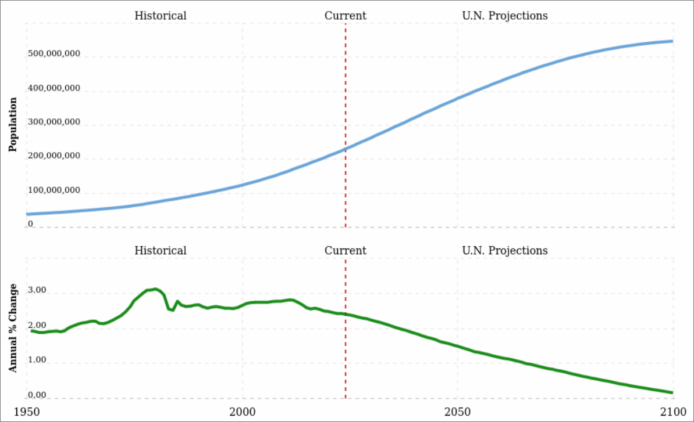

With 230 million people living there, Nigeria is the most populous nation in Africa. Given that forty percent of the population is under fifteen, the country has one of the highest birth rates in the world. Although a large population is necessary for a nation's economy to prosper, Nigeria's overcrowding may quickly grow to be a greater issue than is initially thought.
With 230 million people living there, Nigeria is the most populous nation in Africa. Given that forty percent of the population is under fifteen, the country has one of the highest birth rates in the world. Although a large population is necessary for a nation's economy to prosper, Nigeria's overcrowding may quickly grow to be a greater issue than is initially thought.
 Figure 1: Nigeria's population from 1950 to 2102 (www.macrotrends.net)| Country | Population (as of 2024) |
|---|---|
| Nigeria | 229 million |
| Pakistan | 245 million |
| Indonesia | 280 million |
Malthus’ population principle of population growth modeled as a logistic equation:
where N is the biomass density, a is the maximum per-capita rate of change, and K is the carrying capacity of the population (Source of formula)